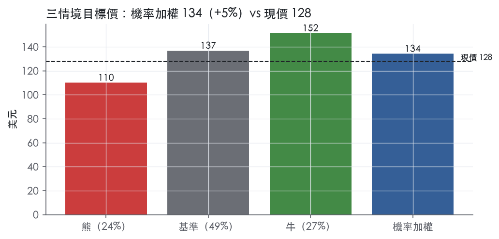
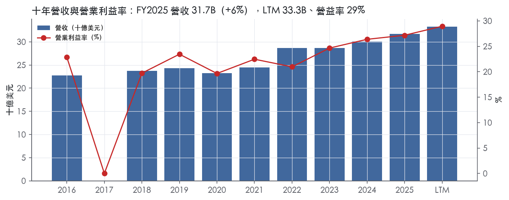
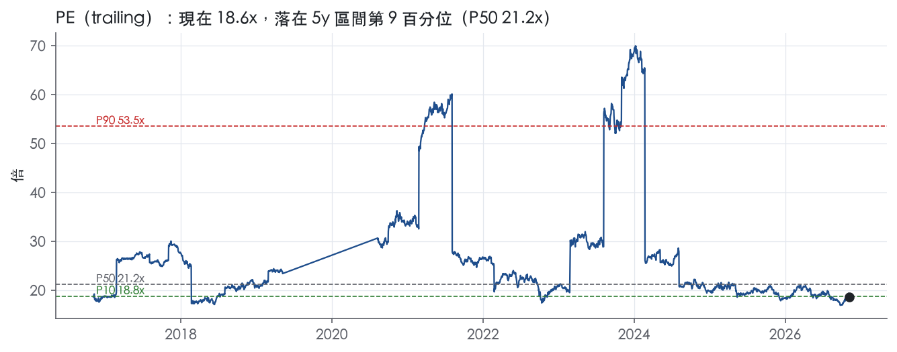
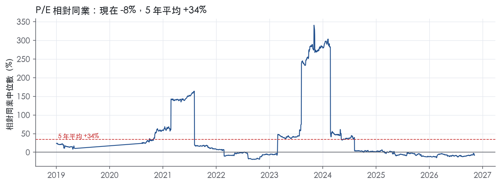
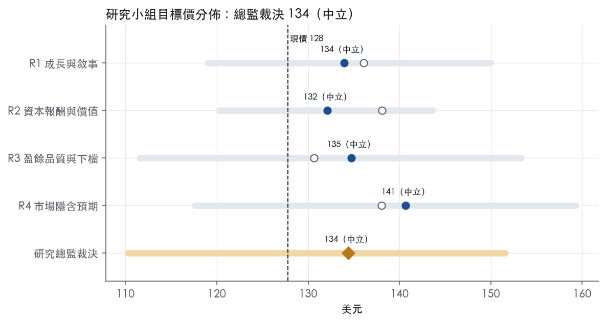
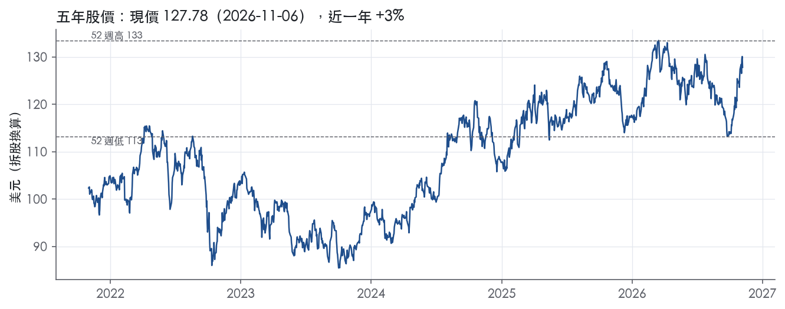

評等總表 › 公用事業 › DUK
倍數不重評、EPS走指引上半，中性｜評等 中立｜目標價 134
| 報告日 | 評等 | 目標價 | 當時股價 | 超額報酬 |
|---|---|---|---|---|
| 2026-11-06 | 中立 | 134 | 128 | -1.3% |
| 2026-10-02 | 中立 | 122 | 114 | +0.5% |
| 2026-09-28 | 中立 | 120 | 113 | -0.2% |
| 快評 | 動作 | 結論 |
|---|---|---|
| 2026-11-05 | 維持 | Q3 EPS比預測高20.9%，維持中立 |
| 評等 | 中立 |
| 12 個月目標價 | 134 美元 |
| 現價 | 127.78 美元（2026-11-06） |
| 預期報酬 | 股價 +5.2%＋股息 3.3%＝總報酬 +8.5%；同業籃門檻 9.8%，超額 -1.3% |
| 估值方法 | P/E 18.0x，套在第 5–8 季的EPS（也就是一年後的未來四季） |
| 三情境 | 熊 110／基準 137／牛 152 |
| 研究流程 | 四位研究員兩輪辯論＋研究總監裁決 |
| 資料來源 | SEC EDGAR XBRL、Tiingo、FRED（全免費） |
倍數不重評、EPS走指引上半，中性（研究總監裁決，四位研究員兩輪辯論後）
評等 中立｜12 個月目標價 134 美元（總監三情境機率加權 135 與研究員中位數 134 各半）｜現價 127.78（2026-11-06）
預期報酬：股價 +5.2%＋股息 3.3%＝總報酬 +8.5%。同業籃門檻 9.8%，超額 -1.3%。
估值方法：P/E 18.0x，套在第 5–8 季的EPS（也就是一年後的未來四季）。三情境：熊 110（24%）／基準 137（49%）／牛 152（27%）。
什麼會讓研究總監改變看法：北卡命令ROE≥10.3%且增收達申請八成、FY2027指引中值≥7.30且2027–28不增資，倍數往19x轉看多；ROE<9.75%或增收不到一半、或宣布年股數>1.5%的增資，倍數到16.6x轉看空。
| 過去四季（實際，FY2026Q3） | 未來四季 | 第 5–8 季 | 第 9–12 季 | |
|---|---|---|---|---|
| 營收（B） | 33.3B | 35.6B | 37.8B | 40.0B |
| 營收成長 | 6.7% | 7.0% | 6.0% | 6.0% |
| 營業利益率 | 29.0% | 28.9% | 28.6% | 28.6% |
| EPS（美元） | 6.86 | 7.12 | 7.61 | 8.27 |
| EPS 成長 | 7.6% | 3.7% | 6.9% | 8.7% |
| 每股股息（美元） | 4.28 | 4.28 | 4.28 | 4.28 |
| P/E（現價） | 18.6x | 17.9x | 16.8x | 15.5x |
| 股息殖利率（現價） | 3.3% | 3.3% | 3.3% | 3.3% |
過去四季為申報數字；預測為研究總監的假設、程式計算。倍數與殖利率都用現價計算，用來看現價對應各期獲利的高低。
| 項目 | 上次（2026-10-05） | 這次（2026-11-08） | 變動 |
|---|---|---|---|
| 評等 | 中立 | 中立 | ＝ |
| 機率加權目標價（美元） | 122 | 134 | +10.0% |
| 超額報酬 | 0.5% | -1.3% | -1.8 pp |
| 目標倍數 | 17.0x | 18.0x | — |
| 未來四季營收成長 | 5.0% | 7.0% | +2.0 pp |
| 未來四季營益率 | 28.1% | 28.9% | +0.8 pp |
| 未來四季 EPS（美元） | 6.58 | 7.12 | +8.2% |
| 熊／基準／牛機率 | 22／52／26 | 24／49／27 | — |
程式計算；「未來四季」各自從當次報告的資料起點算。研究總監逐點說明見第八章「與上次報告比較」。
| 情境 | 機率（歷史） | 故事 | 未來四季營收成長 | 第 5–8 季營益率 | 倍數 | 目標價 | 股價漲跌 |
|---|---|---|---|---|---|---|---|
| 熊 | 24%（21%） | 風險表第1條NCUC修改和解或DEP被砍（ROE<9.75%或增收不到一半）、第5條風暴成本回收遞延、第3條Baa利差2.30迫使增資1.5%，倍數落到自家P10 | 4.5% | 27.5% | 16.6x | 110 | -13.7% |
| 基準 | 49%（49%） | 北卡按和解條件核准（ROE 9.75–10.3%、增收≥申請一半），EPS沿5–7%上半部走但被14%稅率與少數股權吃掉一部分，倍數不重評 | 7.0% | 28.6% | 18.0x | 137 | 7.2% |
| 牛 | 27%（30%） | NCUC照和解核准DEC（ROE≥10.0%、增收≥申請八成）、FY2027指引中值≥7.15且2027–28不增普通股、資料中心負載上修、10年期走本行上行路徑4.60，同業折價收一半 | 7.0% | 29.0% | 19.0x | 152 | 18.6% |
目標價由程式依研究總監的驅動與倍數計算；機率由研究總監給定。括號內是歷史頻率：把這檔股票過去十年 12 個月報酬的波動形狀，置中在基準情境，結果落在各情境附近的比例。

四位研究員用不同方法各自估值，回應研究總監的質疑後交出第二輪，最後由總監逐點裁決。各研究員的主張見第七章，裁決理由見第八章，完整論證見《研究底稿》。
| 立場（一輪→二輪） | 加權目標價（一輪→二輪） | 評等（一輪→二輪） | 第二輪倍數 | 熊～牛目標價 | |
|---|---|---|---|---|---|
| R1 成長與敘事 | 中性→中性 | 136→134 | 中立→中立 | 17.7x | 119～150 |
| R2 資本報酬與價值 | 看多→中性 | 138→132 | 中立→中立 | 19.5x | 120～144 |
| R3 盈餘品質與下檔 | 中性→中性 | 131→135 | 中立→中立 | 18.0x | 112～153 |
| R4 市場隱含預期 | 中性→中性 | 138→141 | 中立→中立 | 18.3x | 118～159 |
| 研究總監裁決 | 中性 | 134 | 中立 | 18.0x | 110～152 |
目標價由程式依各自的驅動與倍數計算；評等＝機率加權總報酬 − 同業籃門檻。
Duke Energy 是一家總部位於北卡夏洛特的受監管公用事業控股公司，透過旗下子公司向美國東南與中西部提供電力與天然氣服務。Duke Energy was incorporated on May 3, 2005, and is an energy company headquartered in Charlotte, North Carolina, subject to regulation by the FERC and other regulatory agencies¹。公司電力業務透過 Duke Energy Carolinas、Duke Energy Progress、Duke Energy Florida、Duke Energy Indiana 和 Duke Energy Ohio 等受監管公用事業，向約 870 萬客戶提供零售電力服務，服務範圍涵蓋六個州約 90,000 平方英里、總估計人口 2,700 萬人¹。天然氣業務透過 Piedmont、Duke Energy Ohio 和 Duke Energy Kentucky 服務約 180 萬總客戶，其中卡羅萊納州 100 萬戶、田納西州 20.5 萬戶、俄亥俄西南與肯塔基北部 56.5 萬戶¹。本質上這是一家受費率監管、靠資本支出與核准投資回報率賺錢的公司，營收成長主要來自客戶數增加與費率案核准，而非市場競爭。LTM 營收 33.30B 美元，是美國大型綜合公用事業集團之一。
公司兩大可報告分部為電力業務與基礎設施（EU&I）及天然氣業務與基礎設施（GU&I），其餘業務列為 Other¹。EU&I 是公司核心規模引擎，擁有約 55,713 MW 發電容量，發電來源以天然氣與燃油（33.5%）、核能（27.5%）、煤（14.5%）為主，加上水力與太陽能（2.0%），其餘透過外購電力與淨交換（22.5%）補足¹。零售售電依客戶類別分布：住宅、商業、工業用電比重因州而異，例如 Duke Energy Florida 住宅占 51%、工業僅 8%，而 Duke Energy Indiana 工業占比較高達 28%¹。GU&I 規模遠小於 EU&I，10-K 未揭露兩分部各自占總營收的具體百分比。GU&I 業務正在收縮：Piedmont 已與 Spire Inc. 簽約出售田納西州業務，預計 2026 年 3 月 31 日完成¹。Other 分部主要是控股公司債務利息、未分攤企業成本、特定所得稅項目，以及captive保險子公司 Bison 和持有沙烏地阿拉伯石化合資企業 NMC 17.5% 股權的投資¹。最新一季(FY2026Q3)分部表現上，EU&I 稅後分部收益達 1,817M 美元，遠高於 GU&I 的虧損 19M 美元與 Other 的虧損 247M 美元，顯示公司獲利幾乎全部來自電力分部²。另外，公司在 2025 年 8 月與 Brookfield Super-Core Infrastructure Partners 關係企業簽訂投資協議，獲得 6B 美元資金，換取對 Duke Energy Florida 最終預期 19.7% 的間接投資權益，為資產貨幣化（asset monetization）策略的一環¹。
EU&I 服務客群以住宅與商業為主，工業用電偏弱。2025 年加權平均來看，住宅客戶持續成長，商業部門因資料中心用電走強而表現良好，但工業銷售因製造業關廠與高利率持續疲弱¹。零售電力定價由各州公用事業委員會核准費率，保證合理投資回報，公司在服務轄區內大多是唯一電力供應商，僅俄亥俄州有競爭性電力供應市場¹。天然氣業務同樣以州核准費率定價，GU&I 在各自零售服務轄區內是唯一天然氣供應商，主要與其他能源形式（電力、丙烷、燃油）競爭終端用戶市場份額，而非與其他天然氣供應商競爭¹。地理上看，公司業務集中於北卡、南卡、佛州、印第安納、俄亥俄與肯塔基六州，電力與天然氣客群高度重疊於卡羅萊納地區。通路上，電力與天然氣皆為受監管直供模式，無需透過第三方零售通路即可觸及終端用戶，但需透過各州費率案程序逐案爭取投資回收與股東權益報酬率。最近獲准的費率案顯示公司在佛州、印第安納、肯塔基、南北卡持續推動多年期費率計畫（MYRP），例如 Duke Energy Carolinas 2025 北卡費率案申請增加 1,002M 美元營收、股東權益報酬率 10.95%，預計 2027 年 1 月生效（尚待核准）¹。
過去四個財季營收與獲利呈現穩定成長的軌跡，主要受基礎設施投資回收與天氣因素驅動。FY2025Q4 營收 7.77B 美元，年增 7.4%，EPS 1.52 美元。FY2026Q1 營收 9.99B…實際為 8.99B 美元，年增 9.5%，EPS 1.97 美元，為四季中單季現金流表現最弱的一季，FCF 為 -2.58B 美元。FY2026Q2 公司報告 EPS 1.38 美元、調整後 EPS 1.43 美元，兩者差異來自 Duke Energy Carolinas 北卡費率案和解相關費用 39M 美元稅後、每股 0.05 美元的特殊項目³。該季電力分部調整後分部收益為 1,310M 美元，高於去年同期 1,194M 美元，主要受成長轄區基礎設施投資回收推動，部分被折舊增加與利息費用上升抵銷³；公司重申 2026 年調整後 EPS 指引 6.55 至 6.80 美元³。FY2026Q3 公司報告與調整後 EPS 皆為 1.99 美元，高於去年同期 1.81 美元，EU&I 分部收益達 1,817M 美元（去年同期 1,658M 美元），GU&I 轉虧為虧損縮小至 19M 美元（去年同期虧損 26M 美元）²。公司將 2026 年調整後 EPS 指引區間收窄至 6.70 至 6.80 美元，並表示「強勁的年初至今表現使公司有望達到區間上緣」²。整體觀察，EPS 與 EU&I 分部收益連續四季同比成長，反映費率案核准效果持續兌現，但自由現金流持續為負（LTM FCF -5.16B 美元），顯示公司仍處於資本支出高峰期，靠舉債與股權合資（如 Brookfield 投資）而非自由現金流支應資本計畫。
公司重申長期調整後 EPS 成長率為 5% 至 7%（以 2025 年指引區間中值 6.30 美元為基準），並表示「有信心自 2028 年起達到區間上半部」²。公司執行長 Harry Sideris 表示：「成長橫跨我們所有州創造了重大機會，我們的重點是確保這種成長惠及所有人——保護現有客戶、強化可靠性並支持我們服務的社區」²。公司正在「執行創紀錄的發電建設計畫，到 2031 年新增 16 吉瓦容量，以支持客戶價值、經濟成長與可靠服務」²。公司將自身定位為「能源現代化策略」的執行者，持續投資電網升級與高效發電資源，以強化系統並滿足成長中的能源需求²。公司亦提及資料中心用電強勁是商業部門銷售成長的重要驅動因素，並預期商業與工業銷售將隨經濟發展組合受益而長期成長¹。從研究角度看，Duke Energy 的成長故事本質上是「監管資本支出循環」：靠費率案核准的投資回報驅動 EPS 成長，而非市場份額擴張或產品創新。資料中心用電需求若能兌現，將是未來幾年商業售電量加速成長的主要上行風險，但公司在前瞻聲明中也提示「若資料中心用電量低於目前預期」將是下行風險之一。目前 trailing P/E 18.6x 低於 5 年中位數 21.2x（分位僅 8.8%），顯示市場尚未完全將此成長敘事反映在估值上，值得留意後續費率案進度與 Brookfield 交易後續階段對資本結構的影響。

依本部評級標準，Duke Energy 評為「無」護城河：特許經營讓它的存續極其穩固，但監管制度把報酬上限壓在資本成本附近，量化底稿九年中沒有一年 ROIC 高於資本成本，我們沒有把握未來 5 年會出現超額報酬。趨勢判定為穩定：ROIC 從低點 4.1% 升到 5.6%，方向在改善，但與資本成本代理值 9.8%仍有明顯差距，費率核准機制也不允許這個差距被長期反轉。這是一家「護城河保護存在、不保護超額報酬」的公司，估值研究員應把它的優勢定價為低風險，而不是高回報。
Duke Energy 的結構性優勢來自兩類：效率規模與無形資產中的特許授權；這兩類都保證它有生意可做，卻不保證它能賺超過資本成本的錢。
效率規模：電網與配氣管線是自然獨占，轄區內第二家業者重複建設沒有經濟意義。"EU&I's businesses operate as the sole supplier of electricity within their service territories, with the exception of Ohio"¹。天然氣端同樣是 "GU&I's businesses operate as the sole provider of natural gas service within their retail service territories"¹。服務範圍為 "approximately 90,000 square miles across six states with a total estimated population of 27 million"¹。
無形資產（授權／特許）：營運與建廠需要州委員會發給的許可，新進者在制度上就被擋在門外。"CPCNs and CECPCNs issued by the state utility commissions, as applicable, authorize EU&I to construct and operate its electric facilities and to sell electricity to retail and wholesale customers"¹。核能執照屬於長天期資產，"the NRC issued a subsequent license renewal for Oconee that allows an additional 20 years of operation through 2054"¹。
成本優勢不列入來源：核能燃料成本每度 0.58 美分，天然氣與燃油則為 3.95 美分¹，但 "changes in fuel costs from year to year have no material impact on operating results of EU&I"¹。燃料成本轉嫁給用戶，低成本的好處不會留在股東手上。
看得到「穩定」，看不到「超額」；數字與「寬護城河」的主張衝突，這正是我們給「無」的原因。
穩定性的證據很強。毛利率十年平均 71.4%、標準差 0.5%。ROIC 標準差同樣只有 0.5%。營業利益率十年平均 23.0%、標準差 2.5%，區間為 19.7% 至 27.2%。這個波動幅度在任何產業都算極低，符合費率保障的特性。
超額報酬的證據不存在。ROIC 十年平均 4.7%，對比資本成本代理值 9.8%，差距為 -5.1%；有資料的 9 年中，高於資本成本的年數為 0。
代理值（10 年債加 5%）套在受監管公用事業身上可能偏高，但改用監管機構自己的標尺，結論也不變。近期各費率案核准的 ROE 介於 9.5% 至 10.3%¹。公司最新 ROE 為 9.7%，十年平均 7.0%、最低 2.9%。換句話說，公司實際賺到的股東報酬長期落在監管機構認定的權益成本附近或以下，並沒有越過它。制度本身也寫明上限："set rates at a level that allows the utility to collect revenues equal to its cost of providing service plus earn a reasonable rate of return on its invested capital"¹。
FCF 利潤率十年平均 -7.8%，最高也只有 0.2%。成長完全靠外部資金支應，這是「資本成本附近的再投資機器」，不是護城河複利。
真正的威脅不在報酬率被壓低（報酬本來就不高），而是特許範圍被繞過，以及監管認列出現缺口。
目標倍數相對同業應持平，不給溢價：費率制度把報酬封頂在資本成本附近，量化底稿沒有任何超額報酬可以拿來支撐高於同業的倍數。我們也不給折價，因為唯一供應商地位與長天期執照讓現金流的存續風險低於一般產業，這部分應反映在較低的折現風險，而不是更高的倍數。目前 P/E 18.6x 低於自身 5 年中位數 21.2x，這個落差應歸因於利率環境與費率案結果，不能當作護城河被低估的證據。
| 指標 | 最新 | 十年平均 | 標準差 | 最低 | 最高 |
|---|---|---|---|---|---|
| ROIC | 5.6% | 4.7% | 0.5% | 4.1% | 5.6% |
| 毛利率 | 72.0% | 71.4% | 0.5% | 70.9% | 72.0% |
| 營業利益率 | 27.2% | 23.0% | 2.5% | 19.7% | 27.2% |
| FCF 利潤率 | -5.3% | -7.8% | 5.2% | -19.0% | 0.2% |
| ROE | 9.7% | 7.0% | 2.0% | 2.9% | 9.7% |
程式計算。資本成本代理值（10 年債＋5%）：9.8%；ROIC 平均減資本成本：-5.1%；ROIC 有資料的 9 年中，高於資本成本 0 年。
營業現金流／淨利 LTM 2.14x、近三年平均 2.89x、十年平均 2.98x，全部是綠燈，代表帳上淨利有紮實的現金流支撐。應計比率 LTM -3.0%、近三年 -4.0%、十年 -3.3%，全部是負值且在綠燈區，表示淨利沒有靠應計項目灌水，反而是現金流優於帳列淨利。真正的缺口在資本支出之後：自由現金流／淨利 LTM -0.96x、近三年 -0.43x、十年 -0.71x，長期是紅燈。這不是營運現金流不夠，而是資本支出吃掉太多——FY2025 資本支出／營收達 44.2%，十年平均都維持在 35-46% 的高位（資料包年度表），LTM 自由現金流為 -5.16B。公司在新聞稿裡講得很明白，正在「執行創紀錄的發電建設，2031 年前新增 16GW 裝置容量」²，這是成長性資本支出而非維護性資本支出，現金轉換跟不上淨利是規管公用事業擴產期的常態，不是盈餘品質警訊。
第三季新聞稿明確寫出「報告 GAAP 與調整後每股盈餘同為 1.99 美元」，兩者完全一致²。非 GAAP 揭露段落也寫明「本次呈現期間沒有列入任何特別項目（There were no special items included in the periods presented）」²。換句話說，這一季沒有 SBC 加回、沒有重組費用剔除、沒有攤銷調整，GAAP 數字本身就是公司拿去跟分析師溝通的數字，沒有美化空間。這在同業中算罕見的乾淨狀態，對盈餘品質是加分項。有效稅率方面，第三季報告稅率 15.3%、調整後稅率 15.5%，兩者差距極小，主要是遞延所得稅超額攤銷減少所致²，屬於遞延稅口徑波動而非現金稅異動。
淨負債來到 92.34B，企業價值 192.01B。淨負債／EBITDA LTM 5.39x、近三年 5.79x、十年 5.86x，長期維持在 5.4-5.9x 區間，遠高於紅燈門檻 3.00x。但這個槓桿水準十年來幾乎沒有惡化趨勢（十年平均 5.86x vs LTM 5.39x 反而略降），顯示不是近期才舉債惡化，而是受規管電力公用事業一貫的資本結構——用可預期的費率基礎（rate base）現金流去支撐高槓桿。利息保障倍數 LTM 2.51x、近三年 2.35x、十年 2.46x 全部是紅燈，低於 8.00x 的綠燈門檻，這與高槓桿是同一個結構性故事，不是突然惡化。資本配置上，十年平均（股利＋回購）／淨利達 108.7%，代表回饋股東金額已超過當年淨利，部分靠舉債支撐股利。同時公司正用出售少數股權的方式替代純舉債融資：2025 年 8 月與 Brookfield Super-Core Infrastructure Partners 簽約，出售 Duke Energy Florida 的間接少數股權投資⁴，Duke Energy Indiana Holdco 也已有 19.9% 少數股權由 GIC 持有⁴，這類交易能補充資本又不稀釋普通股股數——稀釋股數年變動 LTM 僅 0.1%、近三年 0.3%，十年平均 1.3%，股數膀脹壓力相對溫和。
自由現金流／淨利 紅燈：真，但屬規管事業成長期的結構性現象，非盈餘灌水，資本支出／營收 FY2025 達 44.2%（資料包年度表）且用於 16GW 新增產能建設²，現金缺口靠舉債與少數股權出售補足，而非靠虛增帳列盈餘。
淨負債／EBITDA 紅燈：真，是規管公用事業的典型高槓桿結構，十年平均 5.86x 與 LTM 5.39x 相近，沒有近期惡化趨勢，槓桿是產業常態而非公司特有的財務惡化。
利息保障倍數 紅燈：真，與槓桿紅燈同源，十年平均 2.46x 偏低但穩定，顯示公司長期靠低成本、長年期的受規管公司債融資資本支出，付息能力取決於費率案核准而非市場週期（10-K 揭露各州費率案核准 ROE 約 9.6-9.8%）⁴。
淨利率 FY2020→FY2021 跳動 +10pp：資料包年度表顯示 FY2020 淨利 1.38B、EPS 1.72，FY2021 跳升到淨利 3.91B、EPS 4.94（資料包年度表），本次拿到的 10-K Item 7 節錄未涵蓋該年度 MD&A 細節，無法原文佐證具體原因，我判斷較可能與 2020 年疫情導致工商用電需求下滑、2021 年用電需求回補有關，但缺乏原文支持，列為待補證據的解釋而非確證。估值研究員若要用到 2020-2021 年度做跨期比較，應再向公司索取該期 10-K 原文確認。
估值可以用 GAAP 數字，因為本季 GAAP 與調整後 EPS 完全相同、且公司明言無特別項目²，沒有必要對盈餘打折扣。但自由現金流持續為負，估值模型若用 FCF 殖利率（目前 -5.2%）做可比，應理解這是建設期現象，應改用正常化資本支出或規管資產基礎（rate base）成長模型評價，而非單純套用 FCF 倍數。高槓桿與低利息保障限制了股權風險溢酬可以壓得多低，公允倍數應錨定在同業規管電力公司的區間（目前 trailing EV/EBITDA 11.2x 已低於五年中值 12.1x），不應給成長股式的溢價倍數。
| 項目 | LTM | 近三年 | 十年 | 燈號 | 規則 |
|---|---|---|---|---|---|
| 營業現金流／淨利 | 2.14x | 2.89x | 2.98x | 綠 | ≥1.00x 綠、<0.80x 紅 |
| 自由現金流／淨利 | -0.96x | -0.43x | -0.71x | 紅 | ≥0.90x 綠、<0.60x 紅 |
| 應計比率（(淨利−CFO)／平均總資產） | -3.0% | -4.0% | -3.3% | 綠 | ≤0.0% 綠、>5.0% 紅 |
| SBC／營收 | — | 0.3% | 0.3% | 綠 | ≤3.0% 綠、>8.0% 紅 |
| 淨負債／EBITDA | 5.39x | 5.79x | 5.86x | 紅 | ≤1.50x 綠、>3.00x 紅 |
| 利息保障倍數（營業利益／利息） | 2.51x | 2.35x | 2.46x | 紅 | ≥8.00x 綠、<3.00x 紅 |
| 稀釋股數年變動 | 0.1% | 0.3% | 1.3% | 黃 | ≤0.0% 綠、>3.0% 紅 |
| （股利＋回購）／淨利 | — | — | 108.7% | — | ≥50.0% 綠、<0.0% 紅 |
| 應收帳款成長 − 營收成長（FY2025） | -104.8pp | — | — | 綠 | ≤5pp 綠、>15pp 紅 |
程式計算；燈號以 LTM（無則近三年平均）判定。
Duke Energy 的獲利結構幾乎全靠受監管電力分部撐起——FY2026Q3 EU&I 分部收益 1,817M 美元，遠高於 GU&I 虧損 19M 美元與 Other 虧損 247M 美元²，意味公司 EPS 走勢本質上是「費率案核准進度」的函數，而非市場競爭或產品創新的結果。公司重申 2026 調整後 EPS 指引 6.70–6.80 美元、長期成長率 5%–7%（以 2025 指引中值 6.30 美元為基準）²，這個成長軌跡完全建立在州監管機關持續核准投資回收與合理 ROE 之上，任何一州的費率案被打折、延遲或否決都會直接侵蝕 EPS。同時公司自由現金流持續為負（LTM FCF -5.16B 美元），資本支出高峰期靠舉債與資產貨幣化（如 Brookfield 6B 美元注資）撐住資本計畫，一旦信評或融資成本惡化，風險會迅速從「監管風險」擴散成「資產負債表風險」。
| 風險 | 觸發指標（看什麼數字、在哪裡看） | 對 EPS 的影響方向與粗略幅度 | 未來 12 個月發生機率（高／中／低） | 出處 |
|---|---|---|---|---|
| 費率案核准不如預期（ROE、金額被砍或延後） | 各州公用事業委員會對北卡、南卡、佛州、印第安納、俄亥俄、肯塔基費率案的核准結果；EU&I 分部收益季度變化 | 負向，中～大；North Carolina 2025 費率案申請增加營收 1,002M 美元、ROE 10.95%，若核准金額或 ROE 被大幅下修即直接衝擊 EU&I 收益¹ | 中 | 10-K 年報 FY2025 Item 1（業務） |
| 資本支出執行風險（新建計畫延遲、超支、不可完全回收） | 16GW 新發電容量建設進度、資本支出/營收比率（量化底稿：FY2025 為 44.2%）、FCF 走勢 | 負向，中；成本超支或監管不允許回收會直接列為費用或減損⁵ | 中 | ²⁵ |
| 信用評等下調 / 融資成本上升 | 總債務（量化底稿：FY2026Q3 92.79B 美元）、IG/HY 利差（ig_oas 0.93、hy_oas 3.48）、美國十年期公債利率（4.84%） | 負向，大；若評等跌破投資級，需追加抵押品、觸發利率衍生品終止條款，直接吃掉流動性與獲利⁵ | 低 | 10-K 年報 FY2025 Item 1A（風險因素） |
| 核能相關事故或法規驟變 | NRC 對 11 座反應爆延役案件的審批進度、任何核電相關事故公告 | 負向，大但低機率；嚴重核事故可重大影響結果與現金流⁵ | 低 | 10-K 年報 FY2025 Item 1A（風險因素） |
| 極端氣候 / 風暴重建成本無法及時回收 | 公司因重大風暴宣告的重建支出、是否取得監管機關及時成本回收核准 | 負向，中；重建成本可能無法完全或及時透過費率回收⁵ | 中 | 10-K 年報 FY2025 Item 1A（風險因素） |
費率案風險排第一，因為它是唯一同時滿足「高機率、高幅度、可監測」三個條件的風險。公司營運模式依賴州公用事業委員會以成本服務／投資回報基礎核准費率⁵，若州監管機關認定公司受監管盈餘超過核准回報，零售電力與天然氣費率可能被審查並下修，減少公司盈餘⁵。目前北卡 2025 費率案申請增加營收 1,002M 美元、ROE 10.95%，預計 2027 年 1 月生效但尚待核准¹，這是明確可觀測的檢查點：若核准金額或 ROE 被大幅砍低，將直接反映在隔季 EU&I 分部收益數字上。
資本支出執行風險緊接其後，因為公司正「執行創紀錄的發電建設計畫，到 2031 年新增 16 吉瓦容量」²，而 10-K 明確列出建設延遲、監管或環保許可取得失敗、供應商未履約、設備與人工成本超出預期等多重風險⁵。公司資本支出/營收比率長期維持在 40% 以上（量化底稿顯示 FY2025 為 44.2%），任何重大工程取消都可能觸發取消罰款或減損費用⁵。FCF 已連續多年為負（LTM -5.16B 美元），顯示公司正處於資本密集期，執行風險的可監測指標是每季財報中的資本支出進度與 FCF 走勢。
信用評等與融資成本風險排第三，雖機率較低但衝擊幅度大。10-K 明確寫出：若評等被降至投資級以下，借款成本將顯著上升，潛在投資人與資金來源將減少，商業票據市場准入可能大幅受限，且可能觸發額外抵押品要求與利率衍生品終止條款，要求現金支付⁵。目前總債務已達 92.79B 美元，淨負債 92.34B 美元，在高利率環境（美國十年期公債 4.84%）下，任何評等調降都會立即反映在利息費用與 FCF 上。
核能風險雖然機率低，但一旦發生衝擊極大，且公司自己在 10-K 中單獨列出一個章節強調：若發生嚴重核事故，可能對結果、財務狀況、現金流或聲譽造成重大不利影響⁵。公司正推動 11 座反應爆延役 20 年的審批，若 NRC 未核准任何一座的延役，將影響公司 2050 淨零目標的達成路徑⁵，這是可監測的里程碑事件。
極端氣候與風暴重建成本風險機率中等，公司明確寫出風暴重建成本可能無法透過監管流程完全或及時回收，可能影響經營結果、財務狀況或現金流⁵。這類事件通常在公司季報與 8-K 中會揭露重建支出金額與監管回收進度，屬於可持續追蹤的指標。
現價 127.78 對應 trailing（過去四季）P/E 18.6x、EV/EBITDA 11.2x、EV/EBITA 19.9x、EV/Sales 5.8x、FCF 殖利率 -5.2%。主要估值倍數 P/E 現在 18.6x，落在5 年區間第 9 百分位（P10／P50／P90 = 18.8x／21.2x／53.5x）。

把程式的機械基準預測放到現價下，市場付的前瞻倍數是：P/E（未來四季） 17.5x、P/E（第 5–8 季） 16.0x。反推 DCF 顯示市價隱含未來五年營收年成長 150.0%（WACC 9.0%、終值成長 3.0%、FCF 利潤率 -2.0%，SBC 不加回）。
| 倍數 | 現在 | 5 年 P10 | 5 年 P50 | 5 年 P90 | 現在分位 | 全期 P50 |
|---|---|---|---|---|---|---|
| P/E | 18.6x | 18.8x | 21.2x | 53.5x | 8.8% | 22.7x |
| EV/EBITDA | 11.2x | 11.1x | 12.1x | 13.7x | 11.3% | 12.1x |
| EV/EBITA | 19.9x | 20.7x | 22.5x | 28.1x | 2.2% | 22.5x |
| EV/EBIT | 19.9x | 20.7x | 22.5x | 28.1x | 2.2% | 22.5x |
| EV/Sales | 5.8x | 5.1x | 5.7x | 6.0x | 60.7% | 5.6x |
| P/S | 3.0x | 2.5x | 2.9x | 3.3x | 59.4% | 2.9x |
| P/FCF | 1942.1x | — | — | — | — | 807.0x |
trailing 倍數（股價 ÷ 過去四季）；分位以每個交易日計算。
同業籃：SO, NEE, D, AEP, XEL, ED（手動名單（playbooks/peers.yaml））。評等門檻 9.8%：同業「倍數不變下持有一年」的隱含報酬中位數（＝ FCF 殖利率 ×(1＋g)＋g，g 為 5 年營收年複合成長並夾在 −2%～8%），每家夾在 0～15%、P/E 低於 5 倍視為資料可疑而排除，中位數再限制在 10 年債到 10 年債＋5% 之間（同業原始中位數 12.0%）；排除：ED（隱含報酬算不出來）。
| 代號 | 市值 | 5 年營收 CAGR | 營益率 | ROIC | P/E | 5 年 P/E 中位數 | EV/EBITDA | P/FCF | 隱含報酬 |
|---|---|---|---|---|---|---|---|---|---|
| DUK | 99.7B | 6.4% | 29.0% | 5.6% | 18.6x | 21.2x | 11.2x | — | 12.1% |
| SO | 104.1B | 7.7% | 24.2% | 6.0% | 23.6x | 23.2x | 13.2x | — | 12.3% |
| NEE | 181.3B | 8.7% | 31.7% | 6.0% | 22.1x | 25.2x | 18.7x | — | 12.9% |
| D | 60.3B | 3.1% | 26.3% | 5.2% | 20.3x | 21.2x | 15.9x | — | 8.2% |
| AEP | 69.2B | 8.0% | 24.0% | 6.8% | 18.5x | 18.5x | — | 26.7x | 12.0% |
| XEL | 50.6B | 1.9% | — | 4.9% | 18.5x | 20.7x | 14.2x | — | 7.4% |
| ED | 44.0B | 6.7% | — | 4.8% | — | 18.7x | — | — | — |
| 同業中位數 | 7.2% | 25.2% | 5.6% | 20.3x | 21.0x | 15.1x | 26.7x | 9.8% |
全部 trailing，程式以各公司 SEC XBRL 與 Tiingo 行情計算；第一列為本檔。
P/E 相對同業中位數：現在 -8.3%，過去 1 年平均 -9.3%、3 年 30.3%、5 年 34.3%；EV/EBITDA 相對同業中位數：現在 -25.6%，過去 1 年平均 -24.4%、3 年 -13.7%、5 年 -13.1%。

事後實現前瞻倍數帶（P/E，2018-11-19..2025-11-17）：P10／P50／P90 = 16.6x／20.6x／52.3x。它是每個交易日的股價除以之後四季實際實現的指標；一年後，今天的第 5–8 季正是那時的未來四季，所以這條帶是 12 個月目標價的同口徑倍數。因為用的是事後實際而非當時預期，過去成長超乎預期的公司這條帶會偏低。
程式的機械基準（成長率從過去四季年增率三年收斂到 6%、利潤率持平）用 事後實現前瞻 P/E P50 估值得到 165（29.3%），市場現行前瞻倍數（現價 ÷ 基準 未來四季指標）一年後持平，套在基準 第 5–8 季指標得到 140。這兩個數字只是參考點，不是本報告的目標價；研究員對這個定價的回應在第七章。
下表是每位研究員第一輪（各自獨立）與第二輪（回應研究總監的質疑後）的結果。目標價全由程式依各自的假設計算。
| 立場（一輪→二輪） | 加權目標價（一輪→二輪） | 評等（一輪→二輪） | 第二輪倍數 | 熊～牛目標價 | |
|---|---|---|---|---|---|
| R1 成長與敘事 | 中性→中性 | 136→134 | 中立→中立 | 17.7x | 119～150 |
| R2 資本報酬與價值 | 看多→中性 | 138→132 | 中立→中立 | 19.5x | 120～144 |
| R3 盈餘品質與下檔 | 中性→中性 | 131→135 | 中立→中立 | 18.0x | 112～153 |
| R4 市場隱含預期 | 中性→中性 | 138→141 | 中立→中立 | 18.3x | 118～159 |
| 研究總監裁決 | 中性 | 134 | 中立 | 18.0x | 110～152 |
目標價由程式依各自的驅動與倍數計算；評等＝機率加權總報酬 − 同業籃門檻。
分歧度：第一輪 加權目標價 131～138（區間＝現價的 6%）· 倍數 17.5～19.5x · 立場 中性×3、看多×1；第二輪 加權目標價 132～141（區間＝現價的 7%）· 倍數 17.7～19.5x · 立場 中性×4（方向一致）。

| 研究員 | 第二輪主張 | 堅持的理由 |
|---|---|---|
| R1 成長與敘事 | 中性，17.7x，錨在前瞻倍數的下四分位，同業折價不收斂。 | 他是唯一由下而上估營收的人，北卡費率入帳三季，營收成長7.0%。 |
| R2 資本報酬與價值 | 中性，19.5x套未來一年EPS，略高於過去一年市場付的中位數。 | 他只用過去一年的倍數，因為只有這段落在現行高利率環境。 |
| R3 盈餘品質與下檔 | 中性，18.0x，公司的帳乾淨，但同業折價一年內不收斂。 | 少數股權外流與稅率上升撐住折價，熊情境錨在自家倍數下緣。 |
| R4 市場隱含預期 | 中性，18.3x，靠近前瞻倍數的下四分位。 | 市場低估相對同業的倍數，2027年2月指引會讓折價小幅收斂。 |
每位研究員的逐條回應與完整論證見《研究底稿》（DUK_研究底稿_2026-11-08.docx）。
| 分歧點 | R1 | R2 | R3 | R4 | 什麼資料會分出勝負 |
|---|---|---|---|---|---|
| 目標倍數與口徑（multiple） | 17.7x eps@q5_q8，前瞻帶 P25，同業折價不收斂 | 19.5x eps@ntm，1 年 trailing 帶 P50–P90 間 | 18.0x eps@q5_q8，P25 與乾淨 P50 之間，折價因少數股權與稅率不收斂 | 18.3x eps@q5_q8，2027-02 指引觸發折價小幅收斂 | 2027-02 FY2027 指引與融資計畫公布後，對同業 P/E 折價是否自 −8.3% 縮小 |
| 稅率（tax_rate） | 14% | 15% | 13% | 14% | FY2026 10-K 稅務附註的超額遞延稅攤銷時程、FY2026 全年調整後稅率（2027-02） |
| 營益率（op_margin_y2） | 28.9／28.6／28.6 | 28.6／28.2／28.0 | 28.5×3 | 28.9×3 | FY2027Q1 營益率對 LTM 28.9%（北卡費率首季入帳、沒有 Q3 天氣；2027-05） |
| NTM 營收（rev_growth_y1） | 7.0%（由下而上） | 6.5%（基準） | 6.5%（基準） | 6.5%（基準） | 北卡最終命令核准金額（2027-01）、FY2027Q1 營收年增（2027-05） |
| 牛熊寬度與機率（multiple） | ±1x；33／31／36 | +1.0／−1.5x；35／28／37 | +1.0／−1.4x（P10）；24／52／24 | +1.7／−1.8x；29／46／25 | 北卡命令是雙向事件：ROE ≥9.75% 且增收 ≥ 申請一半走基準以上，否則走熊 |
D1 倍數：選 R3，18.0x eps@q5_q8。 口徑先定：劇本主尺是 eps@q5_q8，R2 的 1 年 trailing 帶（P50 19.0x）是現行利率環境下的好交叉驗證，但不是主尺；他 19.5x 套 NTM 算出 133.48，與 18.0x 套 Q5–Q8 的結論幾乎相同，差別在 EPS 不在倍數哲學。錨：事後實現前瞻帶 P75 32.4x、P90 52.3x 證明上半部被 FY2020 EPS 1.72與 FY2022 EPS 3.17墊高；P25 之下的觀測值全是乾淨期，所以乾淨期中位數落在 17.7x 與 20.6x 之間——R1 的 P25 是乾淨區間下緣，R3、R4 都在區間內。不選 R4 的收斂：觸發（2027-02 指引）市場大致已知，5–7% 重申、2028 起上半部都寫在 8-K 2026-11-05；P/E 折價過去一年沒有自行收斂（1 年平均 −9.3%、現在 −8.3%，同業表）；EV/EBITDA 折價擴到 −25.6% 有一部分是 Brookfield、GIC 的非控制權益不在 EV 裡的機械效果（R4 自己的發現）；撐住折價的兩個機制——少數股權外流（DEF 19.7%、Indiana 19.9%，10-K Item 1、Item 7）與超額遞延稅攤銷遞減（Q3 稅率 15.3% 對 10.8%，8-K 2026-11-05）——Q3 的 EPS 驅動表都列了，Q5–Q8 不會消失；加上現價 127.78已高於上次報告的加權目標 122，Q3 超預期與指引上修至少部分已反映。收斂放進牛情境。不選 R1 的 17.7x：GAAP＝調整後、無特別項目（8-K 2026-11-05）、指引收窄到上緣、最大懸念 DEC 已走到和解（Q2 和解費用 39M，8-K 2026-08-04），沒有公司特有理由把一年後的倍數放到乾淨區間最底。程式把 18.0x 標為高於市場持平 17.5x 3%，但 17.5x 是用稅率 11.2% 的基準 NTM EPS 7.30 算的；稅率改 14% 後我們的 EPS 更低、持平點上移，18.0x 大致就是「市場不重評」（以程式算出的隱含 NTM P/E 對照）。
D2 稅率：選 R1／R4，14%。 Q2 12.3%（R1 引 8-K 2026-08-04）→ Q3 15.3%（8-K 2026-11-05），原因是超額遞延稅攤銷減少，屬結構性。攤銷是固定金額，在稅前獲利最高的 Q3 稀釋效果最小、Q2 最大，全年落兩者之間；Q5–Q8 是 2027–28 年，又往攤銷遞減的時程走了一到兩年，取 14% 而非 R3 的 13%。R2 的 15% 錨在單一最高季。分勝負：FY2026 10-K 稅務附註。
D3 營益率：選 R1，y1 28.9%、y2／y3 28.6%。 y1 不砍：北卡增收回收的是已投入服務的資產，折舊早在成本裡，邊際利潤率高於平均（R4 的機制），足以抵掉 Q3 有利天氣的正常化；年度營益率 24.7%→26.4%→27.2%→LTM 28.9%（～FY2025、快照）年年墊高；記分表裡機械基準營業利益誤差中位數 −4.3%、R2 −4.3%、R3 −2.9%，本部習慣把利潤率砍過頭，R2 的 28.2／28.0 與 R3 的 y1 28.5 沒有對應證據，退回。y2／y3 修到 28.6%：模型把利息按 LTM 持平，基準淨負債卻從 96.45B 走到 100.60B（基準三年預測），每季新聞稿都把利息上升與少數股權列為抵銷項（8-K 2026-11-05）；R4 三年都留 28.9% 沒有處理這一層，基準本身 Q5–Q8 EPS 8.01 對 LTM 6.86 的兩年速度遠超 5–7% 指引，而 R4 是唯一系統性偏高（+1.3%）的預測者，方向一致。分勝負：FY2027Q1 營益率。
D4 營收 y1：選 R1，7.0%；y2 6.0%。 只有 R1 由下而上拼過：DEC 申請 1,002M、DEP 729M、預計 2027-01 生效（10-K Item 1），NTM 含三季；扣項是 Piedmont 田納西（預計 2026-03-31 出售，Q2 已反映出售後收益減少；Q3 GU&I 僅虧 19M，氣體分部對盈餘不重要）與天氣正常化。R3 改正時點錯誤後把增量全數與天氣互抵，沒有量化；R2、R4 沿用基準沒有拼。R1 的營收記分最好（勝過基準 59%）。y2 取 6.0%：北卡相對 NTM 只多一季，16 GW 要完工才進費率基礎（8-K 2026-11-05）。分勝負：北卡命令金額、FY2027Q1 營收。
D5 牛熊寬度與機率：own（倍數取 R3，機率從歷史對照出發）。 牛 +1x＝19.0x 照劇本；R4 的 20.0x 伸向被汙染的 P50，而 1 年 trailing 帶 P90 也只有 20.5x，trailing 本就高於同期前瞻。熊 16.6x＝自家 P10，比 −1x 略寬，理由是風險表第 1 條核准 ROE 被砍會同時壓低允許 ROE 對股權成本的利差，打的是倍數本身，P10 就是這種年份；R1、R4 沒看過風險表，熊情境對不上風險表。機率：程式對 R3 的寬度（+12／−18%）算出歷史 27／50／23，對 R4（+13／−17%）算 26／48／25，我的寬度相近，起點就在這裡，取 27／49／24。R1、R2 的熊 36%、37% 不是偏誤，是牛熊距離窄而對稱時歷史確實熊多（28／34、36／37）；熊倍數落到 P10 後距離拉遠，歷史給的權重自然變小。
漂移與總經。 不退回任何第二輪修正：R3 靠攏比例 55% 來自接受 Q1（撤回槓桿、利率的重複計算）與 Q2（北卡時點的事實錯誤），都附證據；R1、R2、R4 是背離中位數。四人 macro_deviations 皆空：牛情境引 10 年期 4.60 是本行上行路徑、熊情境引 Baa 利差 2.30 是本行下行路徑，符合「取對公司有利／不利那組」的用法；R3 第一輪用利率與槓桿把倍數壓到 P25 之下，第二輪已撤回，目前沒有人用利率把倍數放在市場持平之下。全部接受，我的 macro_deviations 為空。
與機械基準不同的驅動：rev_growth_y1 7.0%（R1，D4）；rev_growth_y2 6.0%（R1／R3，D4）；op_margin_y2／y3 28.6%（R1，D3；y1 留基準 28.9%）；tax_rate 14%（R1／R4，D2）；share_change_pct 0.6%（R2／R3：稀釋股數年變動 LTM 0.1%、近三年 0.3%、十年 1.3%（財務體質章），基準資本支出／營收 50.2% 高於 FY2025 的 44.2%、LTM FCF −5.16B表示股權需求高於 LTM，但 Brookfield 6B 與 GIC 式的資產貨幣化替代普通股，取三年與十年之間）。
目標倍數 18.0x，eps@q5_q8。錨：事後實現前瞻帶 P25 17.7x 與乾淨期中位數（低於 20.6x）之間；交叉驗證 1 年 trailing 帶 P50 19.0x；相對同業中位數 20.3x 維持現行 −8.3% 折價（1 年平均 −9.3%），護城河評「無」不給溢價，帳乾淨不加深折價；相對程式市場持平 17.5x 高 3%，但在我們的 EPS 口徑下約等於不重評；股息率 3.3% 對 10 年期 4.84利差為負、本行前提 4.98 不動，沒有利率驅動的倍數擴張。
機率與歷史對照的距離在 1–2 個百分點內。牛略高於熊是 DUK 特有的證據，不是為修正本部偏誤硬翻：DEC 已和解（8-K 2026-08-04）、指引收窄到上緣並點名 2028 起上半部（8-K 2026-11-05）、Brookfield 6B 壓低增資機率（10-K）；總經上本行上行路徑 10 年期 4.60 對公用事業有利，下行路徑的 10 年期 4.85 也低於基準 4.98，對 DUK 不利的只有利差 2.30，總經情境不把機率往熊推。不給牛更高，因為現價已越過上次加權目標 122、離 52 週高 133.46 不遠，北卡命令又是雙向事件。
市場付的是基準 NTM EPS 7.30 的 17.5x（程式）；我們認為基準 EPS 偏高（稅率 11.2%、利息持平、少數股權未外推），在修正後的 EPS 上市場倍數與我們的 18.0x 幾乎重合——差距在盈餘不在倍數，而盈餘差距只是把基準拉回公司指引軌跡。DUK 自身隱含報酬 12.1% 高於同業籃 9.8%（同業表），代表市場對北卡命令、少數股權與槓桿要求額外報酬；我們不押這段溢酬在 12 個月內消失，只放在牛情境。結果是價格上漲空間加 3.3% 股息大約貼著 9.8% 門檻，程式評等中立與我們的中性立場一致。
現價 127.78 → 點估目標價 137 → 機率加權目標價 135 → 目標價 134，差距拆成五段：成長順延 +12 美元（市場現行倍數 17.5x 一年後持平、獲利照機械基準）；倍數差 +4 美元（總監倍數 18.0x vs 市場持平倍數 17.5x，同一機械基準預測）；盈餘差 -7 美元（總監預測的第 5–8 季EPS 0.0B vs 機械基準 0.0B，同一倍數）；情境不對稱 -2 美元（機率加權減點估）；研究小組平均 -0 美元（總監機率加權 135 與研究員第二輪中位數 134 各半）。各段相加等於目標價減現價。本階段未接賣方共識，差距以市場隱含預期為對照。
| 驅動 | 機械基準 | 研究總監 | 差異 |
|---|---|---|---|
| 未來四季營收成長 | 6.5% | 7.0% | +0.5 pp |
| 第 5–8 季營收成長 | 6.2% | 6.0% | -0.2 pp |
| 第 9–12 季營收成長 | 6.0% | 6.0% | ＝ |
| 未來四季營益率 | 28.9% | 28.9% | ＝ |
| 第 5–8 季營益率 | 28.9% | 28.6% | -0.4 pp |
| 第 9–12 季營益率 | 28.9% | 28.6% | -0.4 pp |
| D&A／營收 | 22.5% | 22.5% | ＝ |
| 資本支出／營收 | 50.2% | 50.2% | ＝ |
| SBC／營收 | 0.0% | 0.0% | ＝ |
| 稅率 | 11.2% | 14.0% | +2.8 pp |
| 股數年變動 | 0.3% | 0.6% | +0.3 pp |
研究總監只寫偏移，未寫的沿用基準。
| 期 | 營收 | 成長 | 營益率 | 營業利益 | EBITDA | EBITA | 淨利 | EPS | FCF | 期末淨負債 |
|---|---|---|---|---|---|---|---|---|---|---|
| 未來四季 | 35.6B | 7.0% | 28.9% | 10.3B | 18.3B | 10.3B | 5.6B | 7.12 | -4.3B | 96.6B |
| 第 5–8 季 | 37.8B | 6.0% | 28.6% | 10.8B | 19.3B | 10.8B | 6.0B | 7.61 | -4.5B | 101.1B |
| 第 9–12 季 | 40.0B | 6.0% | 28.6% | 11.4B | 20.5B | 11.4B | 6.5B | 8.27 | -4.5B | 105.6B |
程式依上表的驅動計算；季度用最近四季季節性分攤；不含營運資金變動。
估值方法：P/E 18.0x，套在第 5–8 季的EPS（也就是一年後的未來四季）。研究總監目標倍數的錨：事後實現前瞻P/E帶P25 17.7x與乾淨期中位數（低於20.6x）之間，1年trailing帶P50 19.0x交叉驗證；對同業中位數20.3x維持−8.3%折價；在14%稅率的EPS口徑下約等於市場現行前瞻倍數不重評。
計算：EPS（第 5–8 季） 7.61 × 18.0x → 點估目標價 137（7.2%）；隱含 P/E（未來四季）19.2x、P/E（第 5–8 季）18.0x、EV/EBITDA（第 5–8 季）10.6x、FCF 殖利率（第 5–8 季）-4.1%。
總監三情境機率加權目標價 135，研究員第二輪中位數 134，兩者各半＝目標價 134；預期報酬 股價 +5.2%＋股息 3.3%＝總報酬 +8.5%；減評等門檻 9.8%（同業籃隱含報酬中位數（SO, NEE, D, AEP, XEL, ED））＝超額報酬 -1.3% → 評等 中立（超額 >+15% 買進、+5～+15% 加碼、±5% 中立、−5～−15% 減碼、<−15% 賣出）。同一份資料重開研究小組，超額約有正負四個百分點的雜訊（一個標準差，二十檔實測）；以此估計，評等落在其他級距的機率約二成。
| 情境 | 機率 | 未來四季成長 | 第 5–8 季成長 | 第 5–8 季營益率 | EPS（第 5–8 季） | 倍數 | 目標價 |
|---|---|---|---|---|---|---|---|
| 熊 | 24% | 4.5% | 4.5% | 27.5% | 6.64 | 16.6x | 110 |
| 基準 | 49% | 7.0% | 6.0% | 28.6% | 7.61 | 18.0x | 137 |
| 牛 | 27% | 7.0% | 7.0% | 29.0% | 7.98 | 19.0x | 152 |
| 主張 | 驗證日 | 看哪個數字 | 門檻 |
|---|---|---|---|
| FY2026調整後EPS達指引6.70–6.80中點以上 | 2027-02-28 | FY2026 調整後EPS | >= 6.75（中點，假設） |
| NCUC對DEC最終命令不低於和解框架 | 2027-01-31 | 核准ROE與核准增收金額 | ROE >= 9.75% 且增收 >= 申請1,002M的一半（假設） |
| FY2027調整後EPS指引中值落在5–7%軌道上半 | 2027-02-28 | FY2027 調整後EPS指引中值 | >= 7.15（假設） |
| 超額遞延稅攤銷遞減使全年稅率高於基準11.2% | 2027-02-28 | FY2026 全年調整後有效稅率 | >= 13% |
| 2027年融資計畫不含大額普通股增資 | 2027-08-15 | FY2027Q2 稀釋股數年增 | <= 1.0%（假設） |
到期由程式結算（第 5 階段帳本）。
內文上標數字對應下列公司申報文件；未標上標的分析與判斷，是研究小組的觀點。報告中的每個數字都經程式逐一核對資料包或原文。
| 期 | 營收 | 成長 | 毛利率 | 營益率 | EBITDA | 淨利 | EPS | CFO | FCF | ROIC | 淨負債 | 稀釋股數 |
|---|---|---|---|---|---|---|---|---|---|---|---|---|
| FY2016 | 22.7B | — | 70.9% | 22.9% | 9.1B | 2.2B | 3.11 | 6.9B | -1.0B | — | 50.0B | 0.7B |
| FY2017 | — | — | — | — | 9.7B | 3.1B | 4.36 | 6.6B | -1.4B | 4.3% | 54.1B | 0.7B |
| FY2018 | 23.8B | — | 71.2% | 19.7% | 9.4B | 2.7B | 3.76 | 7.2B | -2.2B | 4.1% | 57.5B | 0.7B |
| FY2019 | 24.3B | 2.5% | 72.0% | 23.4% | 10.9B | 3.7B | 5.06 | 8.2B | -2.9B | 4.8% | 61.0B | 0.7B |
| FY2020 | 23.3B | -4.5% | — | 19.7% | 10.1B | 1.4B | 1.72 | 8.9B | -1.1B | 4.2% | 62.5B | 0.7B |
| FY2021 | 24.5B | 5.3% | — | 22.5% | 11.2B | 3.9B | 4.94 | 8.3B | -1.4B | 4.5% | 66.8B | 0.8B |
| FY2022 | 28.7B | 17.1% | — | 21.0% | 11.9B | 2.5B | 3.17 | 5.9B | -5.4B | 4.7% | 73.3B | 0.8B |
| FY2023 | 28.7B | -0.0% | — | 24.7% | 13.2B | 2.8B | 3.54 | 9.9B | -2.7B | 5.1% | 79.3B | 0.8B |
| FY2024 | 30.1B | 4.8% | — | 26.4% | 14.3B | 4.5B | 5.71 | 12.3B | 0.0B | 5.4% | 84.0B | 0.8B |
| FY2025 | 31.7B | 5.6% | — | 27.2% | 16.3B | 5.0B | 6.31 | 12.3B | -1.7B | 5.6% | 89.6B | 0.8B |
SEC XBRL；每股數據已依拆股換算到現在股數基準。EBITDA 空白 = 該年無形攤銷在 companyfacts 中缺 tag。
| 期 | 期末 | 推導 | 營收 | 毛利率 | 營益率 | EBITDA | 淨利 | EPS | CFO | FCF | 現金 | 總債務 |
|---|---|---|---|---|---|---|---|---|---|---|---|---|
| FY2023Q4 | 2023-12-31 | Q4 | 7.1B | — | 26.0% | 3.4B | 1.0B | 1.27 | 2.6B | -0.7B | 0.3B | 79.5B |
| FY2024Q1 | 2024-03-31 | 7.5B | — | 26.1% | 3.5B | 1.1B | 1.44 | 2.5B | -0.7B | 0.5B | 81.4B | |
| FY2024Q2 | 2024-06-30 | 7.2B | — | 23.9% | 3.3B | 0.9B | 1.13 | 3.0B | -0.0B | 0.4B | 82.4B | |
| FY2024Q3 | 2024-09-30 | 8.1B | — | 26.4% | 3.8B | 1.3B | 1.60 | 3.5B | 0.5B | 0.4B | 84.1B | |
| FY2024Q4 | 2024-12-31 | Q4 | 7.2B | — | 29.2% | 3.7B | 1.2B | 1.56 | 3.4B | 0.3B | 0.3B | 84.3B |
| FY2025Q1 | 2025-03-31 | 8.2B | — | 28.5% | 4.0B | 1.4B | 1.76 | 2.2B | -1.0B | 0.5B | 86.4B | |
| FY2025Q2 | 2025-06-30 | 7.4B | — | 24.8% | 3.8B | 1.0B | 1.25 | 2.9B | -0.4B | 0.3B | 87.4B | |
| FY2025Q3 | 2025-09-30 | 8.4B | — | 27.9% | 4.4B | 1.4B | 1.81 | 3.6B | 0.2B | 0.7B | 88.6B | |
| FY2025Q4 | 2025-12-31 | Q4 | 7.8B | — | 27.3% | 4.1B | 1.2B | 1.52 | 3.7B | -0.5B | 0.2B | 89.8B |
| FY2026Q1 | 2026-03-31 | 9.0B | — | 30.3% | 4.6B | 1.6B | 1.97 | 1.5B | -2.6B | 2.1B | 90.2B | |
| FY2026Q2 | 2026-06-30 | 7.4B | — | 27.6% | 3.9B | 1.1B | 1.38 | 2.8B | -1.4B | 0.7B | 91.2B | |
| FY2026Q3 | 2026-09-30 | 9.1B | — | 30.2% | 4.6B | 1.6B | 1.99 | 3.6B | -0.7B | 0.5B | 92.8B |
流量項目由 10-Q 的年初至今數拆成單季；Q4 = 年度 − 九個月。

本報告由 equity-desk 多代理系統產出，建置中版本，僅供內部研究與方法驗證，不構成投資建議。所有數字以 datapack.json 為準。